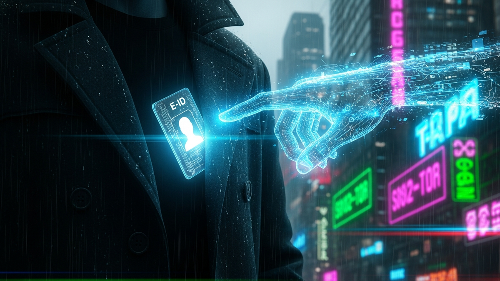

The ubiquity of digital identity documents, particularly electronic passports (e-passports) and national e-IDs, has brought unprecedented convenience to international travel and digital authentication. These sophisticated documents, embedded with microchips, promise enhanced security features compared to their analog predecessors. However, this technological advancement has also sparked a prevalent concern among the public: can these digital identities be illicitly copied or "cloned" by a malicious actor, perhaps even while the document remains securely tucked away in one's pocket or bag? This question taps into a fundamental anxiety about personal data security in an increasingly interconnected and digitally reliant world. The idea of an invisible, silent theft of one's identity, executed without physical contact, is indeed unsettling. This article aims to meticulously dissect the intricate layers of digital passport security, separating fact from fiction, and providing a comprehensive understanding of the actual risks, the sophisticated protections in place, and the practical measures individuals can take to safeguard their digital identity.
Understanding the potential for cloning an e-ID first requires a deep dive into its fundamental architecture and the sophisticated security mechanisms engineered into its design. An e-ID, such as an e-passport, is far more than just a piece of paper or plastic; it is a highly integrated system comprising a physical document, an embedded microchip, and a complex cryptographic framework. The microchip itself is typically a contactless smart card chip, compliant with ISO/IEC 14443 standards, enabling communication via Near Field Communication (NFC) or Radio-Frequency Identification (RFID) technologies. This chip stores critical biometric and biographic data, including the holder's photograph, name, date of birth, and often a digitized version of their fingerprint or iris scan, alongside unique document identifiers and cryptographic keys.
The primary layer of defense against unauthorized access and cloning lies within the chip's secure element and its intricate cryptographic protocols. Unlike a simple memory chip, an e-ID chip is designed to be tamper-resistant and to perform cryptographic operations securely. It contains a unique private key, generated during the personalization process by the issuing authority, which is never meant to leave the chip. This private key is crucial for digital signing and authenticating the chip's data. The integrity and authenticity of the data stored on the chip are guaranteed through a Public Key Infrastructure (PKI) system. Each e-passport chip holds a digital signature from the issuing country's Certificate Authority (CA), verifying that the data was indeed placed on the chip by a legitimate authority and has not been tampered with. This signature is verifiable against a chain of trust that ultimately leads back to the International Civil Aviation Organization (ICAO) Public Key Directory (PKD).
Furthermore, e-passports implement robust access control mechanisms to prevent unauthorized reading of the chip's contents. The most fundamental of these is Basic Access Control (BAC). BAC requires the reading device to first authenticate itself to the chip using a key derived from information printed on the passport's data page, specifically the Machine Readable Zone (MRZ). This means that to initiate a secure communication session and read the chip's data, an attacker would need physical access to your passport to scan the MRZ. Without the MRZ data, the chip will not divulge its contents, even if a reader is in range. BAC establishes a secure, encrypted channel between the chip and the reader, preventing eavesdropping on the data transfer. Building upon BAC, many newer e-ID documents incorporate Extended Access Control (EAC), which provides even stronger protection, particularly for sensitive biometric data like fingerprints. EAC requires a more sophisticated reader and a certificate chain check to authenticate the reader itself, ensuring that only authorized government agencies or border control systems can access the most sensitive information. This multi-layered approach, combining secure hardware, robust cryptography, and strict access control protocols, makes the direct, clandestine cloning of an e-ID chip an exceptionally difficult, if not practically impossible, endeavor for an opportunistic attacker.
The physical security of the chip itself is also paramount. These chips are designed to resist a variety of physical attacks, including micro-probing, reverse engineering, and fault injection. Any attempt to physically extract data or cryptographic keys from the chip's memory would likely trigger anti-tampering mechanisms, rendering the chip inoperable or wiping its contents. Moreover, the chips contain unique serial numbers and hardware identifiers that are deeply integrated into their manufacturing process, making it impossible to produce an identical, functionally indistinguishable copy. The combination of these hardware-based protections with sophisticated software protocols creates a formidable barrier against both physical and logical cloning attempts, reinforcing the security posture of modern digital identity documents against the common fears of effortless replication.
The concept of "cloning" an e-ID often conjures images of a perfect digital replica, indistinguishable from the original, capable of fooling any authentication system. However, the reality of what constitutes a security threat to an e-ID is far more nuanced and less sensational than popular imagination suggests. It is critical to differentiate between two distinct, though often conflated, scenarios: data skimming and true chip replication. Data skimming refers to the unauthorized reading of information from the e-ID chip, typically via its contactless interface. True chip replication, or cloning, implies creating a fully functional, cryptographically identical copy of the entire secure element, including its unique private keys and embedded security logic, which would allow an attacker to impersonate the legitimate document holder.
Let's address true chip replication first. The notion of creating a perfect clone of an e-ID chip, especially a modern e-passport, while it's in your pocket, is, for all practical purposes, a myth. As detailed in the previous section, e-ID chips are engineered with an array of robust security features specifically designed to thwart such attempts. Each chip contains unique cryptographic keys, which are generated securely within the chip during its manufacturing and personalization process and are never intended to be extracted. These keys are fundamental to the chip's identity and its ability to cryptographically sign its data. To "clone" an e-ID, an attacker would need to not only extract these private keys without destroying the chip but also replicate the chip's unique hardware identifiers and its secure operating system. This would require advanced, state-level capabilities, including highly specialized hardware analysis tools, significant financial resources, and an intimate understanding of the chip's proprietary architecture and cryptographic implementations. Even with such resources, the anti-tampering measures and the inherent difficulty of side-channel attacks on modern secure elements make this an extraordinarily challenging, if not impossible, task for an attacker operating covertly in a public space. The complexity is akin to cloning a secure bank card chip, a feat that remains beyond the reach of common criminals due to the fundamental cryptographic principles and hardware security modules involved.
Now, let's consider data skimming, which is a more realistic, albeit still complex, threat. Skimming involves using an RFID/NFC reader to wirelessly access data from the e-ID chip. The critical point here is that even if an attacker has an RFID reader, the Basic Access Control (BAC) protocol significantly limits what information can be obtained without prior knowledge. As previously explained, BAC requires the reader to derive a cryptographic key from the Machine Readable Zone (MRZ) data printed on the passport's physical page. Without this MRZ data (specifically the passport number, date of birth, and expiry date), the chip will not establish a secure session, and thus, cannot be "read" beyond very basic, non-sensitive information that might be broadcast at a very low level for discovery purposes. Even if an attacker manages to skim the MRZ data (e.g., by photographing your passport, or if you're careless with it), they would still need a powerful reader and be within close proximity to initiate a BAC session. The data obtained through such a skim, even if successful, would be a copy of the public data already printed on your passport and the digital photograph. It would not grant access to the chip's private keys or enable the creation of a functional clone. Furthermore, sensitive biometric data like fingerprints, protected by Extended Access Control (EAC), is even more secure, requiring cryptographic authentication from an authorized government terminal.
Therefore, while the fear of someone silently "cloning" your e-ID in your pocket is largely unfounded due to the robust security architecture of modern digital identity documents, the theoretical possibility of data skimming exists if the document is unprotected and an attacker has sufficient proximity and, critically, the MRZ data. However, even successful skimming only yields data that is either publicly available or secured by protocols that require specific authentication, not a functional clone. The distinction is crucial for understanding the actual security landscape and for adopting appropriate protective measures without succumbing to exaggerated fears. The industry's continuous investment in cryptographic advancements and secure hardware design ensures that the e-ID remains a highly secure form of identification, with cloning remaining firmly in the realm of science fiction rather than everyday criminal activity.
While the direct cloning of an e-ID chip is largely theoretical, the concept of data skimming, or the unauthorized reading of data from an e-ID chip, presents a more tangible, albeit still complex, security concern. The premise of skimming relies on the contactless nature of the e-ID chip, which communicates via Radio-Frequency Identification (RFID) or Near Field Communication (NFC) protocols. These technologies allow data exchange without physical contact, typically within a short range of a few centimeters to a few meters, depending on the power of the reader and antenna configuration. The primary fear is that a malicious actor could carry a hidden reader and surreptitiously extract personal information from your e-ID while it remains in your pocket or bag, without your knowledge or consent.
However, it is vital to understand the limitations and practical challenges associated with such skimming attempts, particularly concerning modern e-IDs like e-passports. As previously discussed, e-passports employ Basic Access Control (BAC). This protocol mandates that for any significant data to be read from the chip, the reading device must first authenticate itself to the chip. This authentication key is derived from three pieces of information found in the Machine Readable Zone (MRZ) on the passport's data page: the passport number, the date of birth, and the expiry date. Without these specific details, the chip will not establish a secure, encrypted communication session. This means that an attacker, simply by being in proximity with an RFID reader, cannot access sensitive information like your digital photograph or other biographic data. At most, they might be able to detect the presence of an RFID chip and perhaps read a very basic, non-identifying serial number, but not the critical personal data that could lead to identity theft.
For an attacker to successfully skim data protected by BAC, they would first need to obtain the MRZ data. This is typically achieved through traditional means, such as physically observing or photographing your passport's data page, or through data breaches of systems where your passport information is stored. Once they possess the MRZ data, they could theoretically use a powerful RFID reader to initiate a BAC session. Even then, the practical challenges are significant. The range of passive RFID chips (like those in e-IDs) is inherently limited. While specialized, high-power readers can extend this range, they are often bulky, conspicuous, and require more power than a discreet, pocket-sized device. Furthermore, establishing a stable, continuous connection to perform a full data transfer from a moving target (e.g., someone walking by) in a crowded environment is technically difficult and prone to errors. The data transfer itself is also encrypted once the BAC session is established, meaning any eavesdropping on the wireless communication would yield only scrambled data without the correct decryption key, which is unique to each session.
The type of data that could potentially be skimmed, even in a successful BAC-enabled attack, is also important to consider. It primarily includes the same biographic data printed on the passport's data page (name, date of birth, nationality, passport number, etc.) and the digital photograph. More sensitive biometric data, such as fingerprints or iris scans, is typically protected by Extended Access Control (EAC), which adds another layer of cryptographic authentication, requiring the reader itself to be authenticated by a certificate issued by a trusted authority. This makes EAC-protected data virtually inaccessible to anyone other than authorized government terminals. Therefore, while the idea of data skimming can be unsettling, the practical hurdles for a malicious actor to both acquire the necessary MRZ data and then successfully execute a covert, wireless data extraction are substantial. The risks are not zero, but they are considerably lower and more complex to exploit than commonly perceived, particularly for the most sensitive information. The primary concern often revolves around the basic information that is already visually accessible on the document itself, rather than deeply confidential data or the ability to create a functional clone.
Protect your identity and browse privately with Surfshark One - the all-in-one security suite.
GET 60% OFF SURFSHARK NOWWhile the immediate threat of "in-pocket" cloning or casual data skimming of e-IDs is significantly mitigated by robust security protocols, it is crucial to acknowledge that no security system is absolutely impenetrable. Advanced adversaries, often state-sponsored or highly resourced criminal organizations, may explore more sophisticated and hypothetical attack vectors to compromise digital identity documents. These scenarios move beyond simple RFID readers and delve into complex cryptographic exploits, hardware tampering, and supply chain vulnerabilities, pushing the boundaries of what is technically feasible, even if highly improbable for the average individual to encounter.
One such advanced scenario involves side-channel attacks. These attacks do not attempt to directly break the cryptographic algorithms but rather exploit physical characteristics of the chip's operation, such as power consumption, electromagnetic emissions, or timing variations during cryptographic computations. By carefully analyzing these side channels, an attacker might be able to deduce parts of the secret key or gain insights into the chip's internal state. While incredibly difficult to execute remotely, especially on a moving target, a sophisticated attacker with physical access to a target's e-ID (even for a short period) could potentially use specialized equipment to perform such an analysis. However, modern secure elements are designed with countermeasures against common side-channel attacks, incorporating noise injection, random delays, and power equalization techniques to obscure such tell-tale signs, making extraction of full cryptographic keys exceedingly challenging and time-consuming.
Another hypothetical, though extremely complex, attack vector is the exploitation of zero-day vulnerabilities within the chip's operating system or the cryptographic libraries it uses. Like any software, the firmware on an e-ID chip could theoretically contain undiscovered flaws that, if exploited, might allow an attacker to bypass security controls, extract data, or even modify the chip's behavior. Discovering and exploiting such a vulnerability requires immense expertise, reverse-engineering capabilities, and significant resources, often mirroring the capabilities of national intelligence agencies. Even if a zero-day is found, deploying it covertly against a target's e-ID in their pocket would still be a monumental task, likely requiring a highly specialized, custom-built device capable of delivering the exploit payload wirelessly and silently, all while bypassing the chip's existing access control mechanisms. The window for such an attack would also be extremely narrow, as discovered vulnerabilities are typically patched in subsequent chip generations or through firmware updates where possible.
Supply chain attacks represent another high-level threat, targeting the e-ID document before it even reaches the holder. This could involve compromising the chip manufacturing process, the personalization process (where data is written to the chip and cryptographic keys are generated), or the printing and embedding stages. An attacker might attempt to introduce malicious firmware, backdoor access, or weak cryptographic keys during these phases. Such an attack would require deep infiltration into the secure facilities of government agencies or their trusted contractors. While a serious concern for national security and the integrity of the identity system as a whole, it is not a threat that an individual can directly mitigate or that allows for "in-pocket" cloning by a street-level criminal. Governments and issuing authorities invest heavily in securing their supply chains precisely to prevent such catastrophic compromises of trust.
Finally, physical tampering, while not a "while in your pocket" scenario, is a relevant advanced attack. An attacker might attempt to delaminate the e-ID, physically remove the chip, and then use highly invasive techniques to analyze or alter its contents. This is a destructive process that would render the document visibly compromised and likely inoperable. It also requires prolonged physical control over the document, making it distinct from the contactless cloning fear. In summary, while advanced attacks and hypothetical scenarios against e-IDs exist in the realm of possibility, they require extraordinary resources, expertise, and often physical access or a highly specific chain of events that are far removed from the casual, opportunistic cloning attempts that often fuel public anxiety. The robust design and continuous security enhancements aim to keep these sophisticated threats at bay, ensuring that the foundational trust in digital identity remains largely intact.
While the direct cloning of an e-ID in your pocket is a largely unfounded fear due to advanced security protocols, understanding and mitigating the theoretical risks of data skimming and other potential vulnerabilities remains a prudent approach. Fortunately, a range of protective measures and tools are available, from simple physical barriers to sophisticated digital strategies, empowering individuals to safeguard their digital identity. These solutions primarily focus on preventing unauthorized wireless access to the chip's data, enhancing overall digital security practices, and leveraging the inherent strengths of the e-ID system.
The most widely adopted and accessible physical protection against RFID/NFC skimming is the use of RFID-blocking wallets, sleeves, or passport holders. These products are designed with an integrated layer of metallic or carbon fiber material that creates a Faraday cage around the e-ID chip, effectively blocking radio waves from reaching it. By preventing the chip from receiving the interrogation signal from an RFID reader, these accessories make it impossible for an unauthorized device to initiate communication, even if it has the necessary Machine Readable Zone (MRZ) data. While some argue their necessity given the robust Basic Access Control (BAC) and Extended Access Control (EAC) protocols, RFID-blocking items offer an inexpensive and simple layer of added peace of mind. They act as a physical shield, ensuring that even if an attacker possesses a powerful reader and your MRZ data, the signal cannot penetrate to activate the chip. This is a pragmatic, low-cost solution that directly addresses the wireless skimming concern.
Beyond physical barriers, user vigilance and education are critical. Understanding how your e-ID works and its security features can prevent unintentional exposure. For instance, being mindful of who has physical access to your passport and ensuring its secure storage when not in use can significantly reduce the risk of someone obtaining your MRZ data, which is a prerequisite for any BAC-enabled skimming. Avoid leaving your passport unattended in public places, and be cautious about sharing images of your passport's data page online. Many digital services now require e-ID verification; always ensure you are using reputable, secure platforms for such processes, verifying their authenticity and data handling policies. Using official government apps or trusted third-party services for identity verification is paramount, as they are designed to interact securely with your e-ID chip and adhere to strict privacy standards.
For more advanced digital identity solutions that may integrate with e-IDs, such as those leveraging decentralized identity (SSI) or multi-factor authentication (MFA), the protective measures extend to software and cybersecurity best practices. This includes using strong, unique passwords for any online accounts linked to your digital identity, enabling two-factor or multi-factor authentication (2FA/MFA) wherever possible, and keeping your operating systems and applications updated. Software updates often contain critical security patches that address newly discovered vulnerabilities, protecting against potential exploits that could indirectly compromise your digital identity information. While these measures don't directly protect the physical e-ID chip, they secure the digital ecosystem surrounding your identity, which is equally important in preventing identity theft and fraud.
Furthermore, the continuous development of e-ID technology itself offers inherent solutions. Future iterations of digital passports may incorporate enhanced active shielding technologies, more advanced cryptographic algorithms resistant to quantum computing threats, or even biometrically activated chips that require a live biometric scan (e.g., fingerprint, facial recognition) directly at the point of interaction before the chip divulges any data. These innovations, driven by international standards bodies like ICAO, are constantly raising the bar for digital identity security. In summary, while the fear of in-pocket cloning is largely unfounded, a combination of physical RFID-blocking accessories, informed user behavior, robust digital hygiene practices, and the continuous evolution of e-ID security technologies provides a comprehensive framework for protecting your digital identity from both theoretical and practical threats.
The landscape of digital identity is in a constant state of evolution, driven by the twin forces of technological innovation and an escalating need for enhanced security and privacy. As e-IDs become more integrated into our daily lives, from border crossings to online authentication, the methods for securing them are also advancing rapidly. The future of digital identity security promises a blend of cutting-edge cryptography, advanced biometrics, and novel architectural paradigms designed to address emerging threats and provide a more resilient, user-centric identity experience. This... and implement these strategies to ensure long-term success.
In summary, staying ahead of these trends is the key to business longevity and security. By following this guide, you maximize your growth and ensure a stable digital future.
Don't wait for the headlines. Our Private Telegram Channel delivers real-time AI security updates and digital wealth strategies before they go viral. Stay protected. Stay ahead.
⚡ JOIN THE 1% NOWNo sign-up required. Instantly check risks, analyze AI text, or calculate your digital finances.